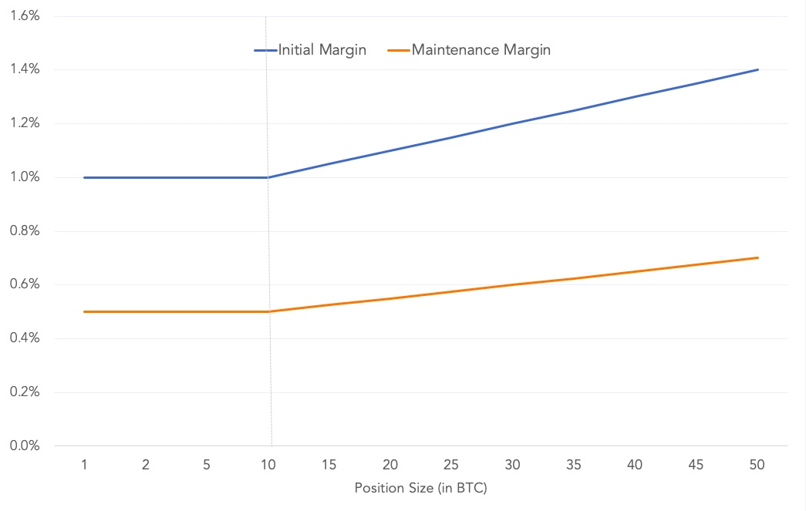

Margining Explainer
What is Margin
Margin is the collateral that you need to post when entering into a leveraged derivatives contract. The amount required to enter into a new position is referred to as Initial Margin. The Initial Margin for a position depends up on both the position size and the selected leverage.
If the trade against you, the unrealised loss in your position is adjusted against the initially posted margin. When the remaining margin (Initial Margin - Unrealised Loss) goes below Maintenance Margin, liquidation process is triggered.
Risk Limits: Margin Requirement vs. Position Size
The Initial Margin and Maintenance margin requirements for any contract are increased as the position size increases. Increasing the margin requirement helps to ensure orderly liquidation of large positions and reduces the incidences of auto-deleveraging.
Margin requirement remains flat till a certain position size (Position Threshold). Once position size crosses this threshold, margin requirement increases linearly with position size.

When Position size is less than or equal to Position Threshold:
and, when Position size is greater than Position Threshold:
The values of , , Position Threshold and Slope vary from contract to contract and are available in the contract specifications.
Isolated Margin
Delta Exchange follows an Isolated Margin approach in which margin is explicitly assigned to each position and is not shared across positions. However, cross-margin like functionalities can be acheived by enabling auto margin top up.
A position is specific to a particular contract. Thus, for each contract, two margin sub-accounts are maintained:
-
Position Margin: Margin allocated to all existing (may include multiple long/ short positions) in given derivatives contract
-
Order Margin: Margin allocated to all open orders in a given derivatives contract
It is worth noting that Unrealized PnL is not factored into Position Margin or Order Margin.
Position Margins and Order Margins are allocated from your Wallet Balance. Thus, at any time, the amount that remains unallocated is what is available for placing a new order. This is referred to as Available Balance.
Everytime a new order is placed, the system does three things:
- computes the Reservation margin for this new order,
- checks whether , and
- if holds, then transfer Reservation Margin amount from Available Balance to the Order Margin of the contract.
Reserved Margin Computation
Initial Margin (IM) requirements for a standalone order are as follows:
- Buy limit order
- Buy market order
- Sell limit order
- Sell market order
Now, if there are existing positions/ open orders in the contract, then the Initial Margin requirement for the new combination of position and open orders is recomputed. For this computation, positions or orders on opposite side are netted in such a manner that for two offsetting orders, margin is reserved only once.
Reserved Margin is then the difference of the Initial Margin requirement for the combined position (existing + new order) and the Position Margin and Order Margin currently allocated to the derivative contract.
Impact of order cancellations on margin
In a given contract, Order Margin account contains margin blocked for all the current open orders. If one or more of these open orders is cancelled, the Initial Margin requirement for the remaining open orders and existing orders is recomputed. The new Initial Margin requirement will either be same as earlier or lower. In the latter case, excess margin is released.